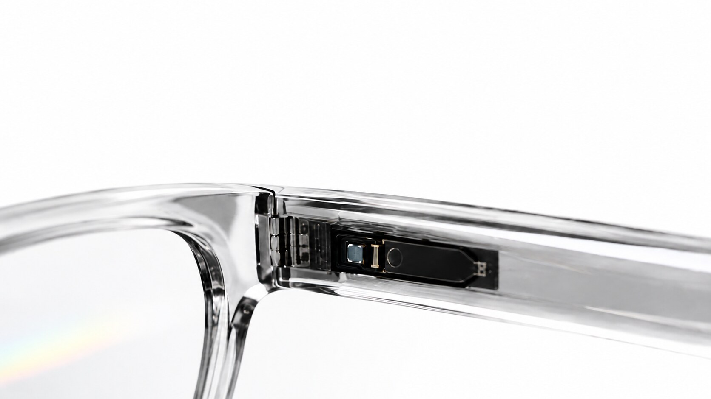
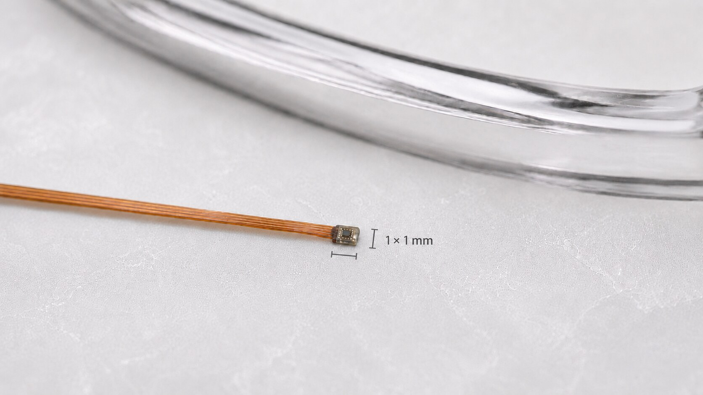
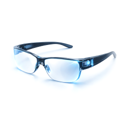
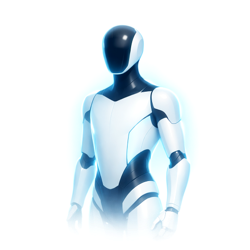

Motia uses an eye-safe sensor to track the wearer's eye and facial movements, combined with a proprietary AI foundation model for signal interpretation. This reveals what the user is focused on, inferring cognitive state and activities like reading or speaking.
The user controls the device through eye movements, such as a long blink. These silent, intuitive UI gestures keep device control private and interactions seamless.
Motia is the lowest-power miniature optical micromotion sensing stack built for wearable AI. This is the missing piece enabling truly seamless, multimodal human-AI interaction.
01
Until now, smart glasses used a camera to capture eye movement, adding even more power-intensive requirements to the device. Motia uses a single low-power sensor: single-digit milliwatts, no image processing.

02
Motia is designed to run at all times so wearers don't need to intentionally activate the device to interact. The sensing element is small enough to integrate invisibly into the slimmest eyewear frames and compact sensing devices.
03
The wearer's gaze and micro-movements become the cursor and interface. Motia detects motions no camera can capture that carry information about attention and cognitive state.
04
Precise eye motion is the foundation, but a true interface needs more than motion alone; it needs a way to confirm intent. Motia's motion layer is designed to pair with a separate confirmation signal, like silent speech or micro-gesture. This is the same shift the computer mouse made from raw motion to motion-plus-click.
Proprietary hardware and AI foundation model, purpose-built for sensing eye and facial micromotion.
A scalable optical sensing architecture supporting distinct motion-intelligence applications on the same foundational technology.


Explore how Motia™ motion intelligence can enhance your next product. We're partnering with early adopters to shape the future of optical sensing.